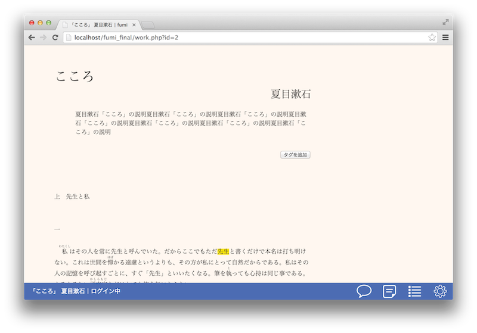

fumi はオンサイトソーシャルアノテーションサービスです。これまでの電子書籍サービスでは成し得なかった、集合知を積極的に利用することを目的にした読書環境を（おそらく）初めて実現しました。
電子書籍元年と言われる2010年から早くも４年が経ち、市場規模は右肩上がりを続けています。ここで電子書籍、あるいはもっと広くwebを用いたコンテンツサービスの未来を考えてみると、まだまだ実現されていないサービスの種はたくさんあることに気が付きます。その1つのプロトタイプがfumiです。fumiはこれまでの電子書籍サービスで無視されてきた「本を育てる」という視点で開発されました。
現在語られている電子書籍の本質的価値としては以下の４つ
(1)製作コストが下がりロングテールモデルが生きてくる（絶版がなくなる、小規模出版が容易になる）こと
(2)本のリッチコンテンツ化（インタラクティブな操作性・動画の挿入など）
(3)安価であること
(4)本の物質性に起因する欠点がないこと（かさばらない、劣化しない）
が主として挙げられます。"ささっとたくさん"読まれることの多い、漫画や雑誌・ハウツー本・ニュースといったものがいち早く電子化されているのは上記(1)~(4)の特徴すべてが生かされやすいコンテンツであることが大きいでしょう。
しかし、それ以外にも、現代だからこそ実現できる本の読み方というのは存在するはずだという信念の下で可能性を追い求めていった結果、私はfumiに行き着きました。fumiが対象とするのは"じっくりすこしを"精読するタイプのいわゆる近代の名作や外国文学です。これらは青空文庫やProject Gutenbergを始めとするインターネットライブラリから無料で容易に入手できるにも関わらず、現在十分に利用されているとは言えません。例えば、明治の文豪の作品はほぼ全て青空文庫にありますが、それをただ読むこと以外の方法で利用したものは全文検索システムくらいしかありません。その上、タダで読めると分かっていても新潮文庫や角川文庫版を買って読む人も多いことは、それが書店で平積みされていることから明らかです。もし我々が本の文章そのものだけに価値を見出すとしたら、無料で電子版が公開された瞬間に文庫版の価値は消え、販売されることもなくなるはずですが、現実にはそうなっていないのです。
前置きが長くなりましたが、fumiの本質的な点はここにあります。どうすれば、電子化されている名作を活かすことができるか。すべての本に適用可能な現代ならではの読み方は存在しないのか。この問に対する私の答えが、すべての人を読者と同時に解説者（注釈者）にすることでした。文章を中心としてwiki的システムを組み立て、いつでもだれでも注釈（annotation）という形で作品に干渉することができる。これは今まで編集者から読者へ一方向的だった注釈を、すべての人の間で双方向なものに変える大転換です。これまではレビューという形で個別になされてきた本に対する反応が、fumiで作品の文章と同じ場所に注釈として書かれることで集合知としての力を発揮します。これはレビュワーが書いた文章の価値を高めるだけでなく、作品自体の価値を高めることにもつながります。なぜなら、作品の「読まれ方」は読者それぞれの背景知識によって無数に生まれるもので、そのメタ情報を作品と同じ場所に集めるということは多数の「読み」を作品自身の骨肉とすることに他ならないためです。
こうした考えのもとでfumiは作られました。これからの「フリーな知識」の中に、あなたの「読み」を活かしてみませんか。
| ニコニコ静画 | 右から左に流れるコメントは精読に向かない。ニコニコ動画と同様、知識の集約というよりもむしろ盛り上がりの共有の役割が強い。 |
| rap genius | ほとんど一緒。強いて言えばrap geniusは短い歌詞や詩を対象にしているのに対し、fumiは長文作品を対象にしている点が異なる。 |
他にもあれば教えて下さい。
fumiの中核となるのが文章への注釈（アノテーション）機能です。使い方は極めて簡単で、注釈対象範囲をドラッグして出てきた小ウィンドウに注釈を入力するだけです。

これがアノテーションモードの作品表示画面です。
注釈したい部分の文章をドラッグすると以下のように、右側に注釈メニューが現れます。
注釈メニューに注釈内容を入力し、注釈のモード（後述）を選択して送信すると選択された部分に注釈をつけることができます。
この注釈はあとから変更・削除をすることができ、注釈の評価も可能です。
（※注釈の「モード」：fumiにおける注釈には、「一般」「質問」「回答」「注釈」という４つのモードが存在します。このうち「注釈」モードのアノテーションは、将来的にfumiリーダー（fumiのデータを読みやすいように整形したサービス）で実際の本の注釈のように扱われます。すなわち、読者に確認すること無く、本の一部として表示されます。これがfumiが目指す次世代の注釈サービスです。なお、「回答」「注釈」モードでのアノテーションはログインユーザーのみが可能です。用途としては「一般」「回答」モードで蓄えられた議論をまとめたものを「注釈」モードで書き込むことを想定しています。）
すでに注釈されている部分は文字の背景が黄色にハイライトされており、この部分をクリックするとそこについている注釈を確認することができます。
このメニューから注釈の評価、変更、削除が可能です。注釈の評価は誰でもできますが、変更・削除ができるのはその注釈を書いたユーザーのみです。
画面下部の青色の部分はコントロールバーと呼ばれます。コントロールバーの左側にはエラーメッセージなどが表示されるメッセージバーがあり、右側には様々な機能を持ったボタン群があります。右端のボタンをクリックするとトップページやヘルプページへのリンクがあるボックスが表示されます。右から２番目のボタンをクリックすると、以下のようにその作品についた全ての注釈の一覧が表示されます。この画面の灰色の網掛け部分をクリックすると、注釈対象位置までジャンプすることもできます。
以上がfumiの基本機能であり、本質的な部分です。実際に利用して機能を体感してみてください。
※サンプル画像は全て開発中のものであり、現在稼働中のものと細部が異なっている場合があることをご了承ください。